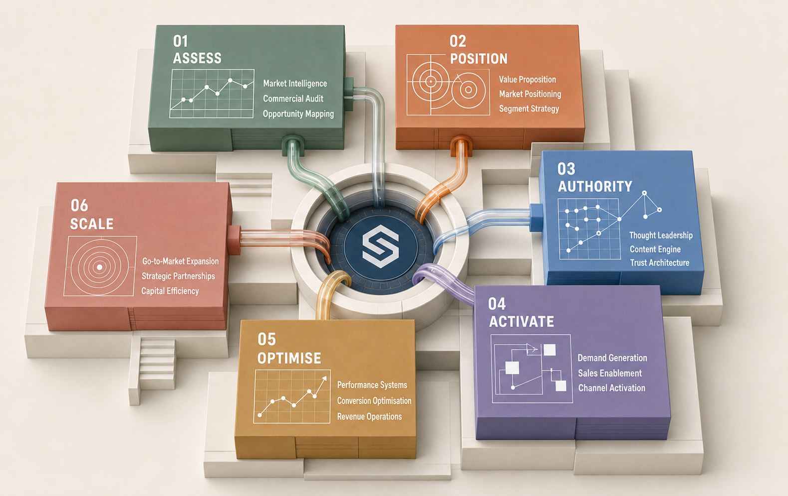
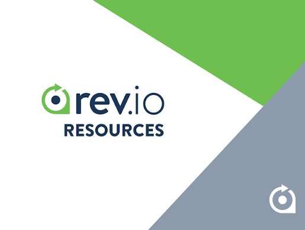

Strategy, authority and execution—built to work together.
Build the Commercial Engine Behind Reliable Growth.
Sedisson helps ambitious companies sharpen how they compete, earn buyer confidence and turn good commercial thinking into consistent execution.
Built for the long term

Trusted by ambitious companies

The Sedisson Method™
Find what is holding growth back.
Then fix it in the right order.
We start with the business as it is—not as the plan says it should be. From there, we strengthen the message, the proof and the way the work gets done.
See how the method works →- 01AssessFind the gaps.
- 02PositionMake the choice clear.
- 03AuthorityGive buyers proof.
- 04ActivateTake it to market.
- 05OptimiseLearn and adjust.
- 06ScaleGrow what works.
Our point of view
More sales activity is not always the answer.
Sometimes the real problem sits further upstream.
If the offer is hard to explain, the evidence is thin or teams are working from different assumptions, adding more campaigns simply makes the weakness more visible.
We help companies fix those fundamentals, then put more weight behind what works.
Read our approach →Choose the kind of support your business needs now.
Focused engagements for companies building their commercial foundation, authority or route to scale.
Explore solutions → 02 / Our thinkingUseful ideas for difficult commercial questions.
Clear analysis on positioning, buyer behaviour, authority, demand and market intelligence.
Read Sedisson Insights → 03 / Selected workSee how the thinking holds up in practice.
A selection of the problems we have worked on, what we changed and what clients could do afterwards.
View selected work →Start with the real question
Where is growth getting stuck?
Tell us a little about the business before we speak. We will use the first conversation to get into the problem—not repeat what is already on your website.